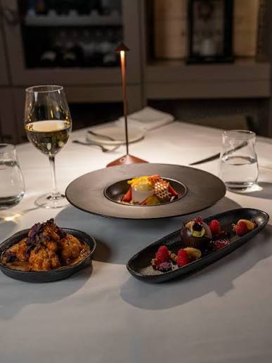

There is no shortage of options for anyone chasing a proper tasting menu in Ottawa these days. The capital's upscale dining scene has quietly matured into something with real range — kitchens building entire evenings around a single, unfolding idea, one course at a time.
What makes a tasting menu worth booking isn't just the number of courses. It's whether the kitchen has a point of view — something they're trying to say across the meal, not just a tasting-sized sampler of the à la carte. The eight restaurants below all clear that bar, each in a very different way. Whether the occasion is a milestone, a proposal, or simply a night when only the full fine dining experience will do, this is where to start.
No menu, no à la carte — just the chef's vision, course by course
If there's one restaurant that defines what a tasting menu can be in this city, it's Atelier. There's nothing to choose from here — guests hand the evening entirely over to Chef Marc Lepine, whose ever-changing modernist menu has made the Rochester Street dining room a genuine destination well beyond Ottawa's city limits.
Lepine's two Canadian Culinary Championship titles are earned, not incidental — the cooking reflects a decade and a half spent refining a single, uncompromising idea of what upscale dining can look like. This is the benchmark against which every other tasting menu in the city gets measured, fairly or not.
A five-course menu backed by one of the city's deepest cellars
Beckta doesn't chase attention, and it doesn't need to. The Elgin Street institution has been quietly delivering one of Ottawa's most polished tasting menu experiences for over two decades, built on a five-course structure that gives the kitchen room to build a narrative without overreaching.
The wine program is arguably the real draw here — a thoughtfully built list that turns the meal into a proper pairing exercise for anyone who wants it. Service is warm and unhurried, the kind that makes an evening feel considered rather than rushed. A dependable, elegant choice whenever the occasion calls for something upscale and unfussy.
A nine-course menu in one of downtown's most striking rooms
Aiana's dining room announces its ambitions before the first course arrives — dark lacquered surfaces, gold detailing, dramatic pendant lighting, all steps from Parliament Hill. Chef Raghav Chaudhary's nine-course tasting menu matches that ambition, drawing on classical French technique filtered through a genuinely multicultural take on Canadian ingredients.
What stands out is how the menu resists feeling clinical — there's real warmth in the way each course is introduced and explained tableside. For a special occasion where the room needs to match the food, Aiana is one of the more reliably impressive bookings in the city.
Sixteen seats built around a single fermentation-driven kitchen
Antheia isn't trying to be everything to everyone, and that's precisely the point. Chef Briana Kim's Somerset Street counter seats just sixteen guests around an open kitchen, where the entire menu is shaped by an ongoing fermentation programme — koji, garums, and preserves that have often been developing for months before they ever reach the plate.
A Canadian Culinary Championship winner in her own right, Kim has built something in Ottawa that genuinely doesn't have a local equivalent. For anyone chasing a tasting menu that feels more like a considered conversation than a meal, this is the one to book — and to book well in advance.
An intimate Centretown room with an Italian-leaning tasting format
North & Navy operates on a smaller scale than most of the names on this list, and that's exactly its appeal. The Centretown room is intimate almost to the point of intensity, with a tightly edited menu that leans Italian without ever feeling derivative — house-made pasta and confident, ingredient-forward plating define the experience.
It's the kind of tasting menu that rewards a small party and an unhurried evening. Less spectacle than some of the bigger names in Ottawa's upscale dining scene, but no less serious about what arrives on the table.
A ByWard Market chef's counter built for a slow, multi-course evening
Giulia's ByWard Market location does something its sister restaurant doesn't — a chef's counter tasting menu, seated right at the edge of the kitchen. It's an intimate, multi-course format that lets guests watch the plates come together in real time, built around the same handmade pasta and coastal Italian sensibility the restaurant is known for.
The format rewards guests who want to engage with the kitchen directly, not just eat in its shadow — a genuinely different way to experience an upscale Italian tasting menu in Ottawa.
A ByWard Market heritage building with over two decades of history
Set inside a 19th-century heritage building in the ByWard Market, Eighteen has quietly been one of Ottawa's steadiest upscale bookings since it opened in 2001. The tasting menu draws on Canadian steak and seafood, backed by a wine list that has picked up genuine industry recognition over the years.
It's a restaurant that knows exactly what it is — a confident, well-run room for a proper night out, without the need to reinvent itself every season. That kind of consistency has real value.
A South Indian tasting menu that stands entirely on its own
Coconut Lagoon rounds out this list with something genuinely different — a tasting menu built around South Indian coastal cooking, layered with spice work that unfolds course by course rather than arriving all at once. It's a reminder that Ottawa's upscale tasting menu scene isn't confined to a single culinary tradition.
For anyone who wants their special occasion dinner to feel distinct from the more familiar French- and Canadian-leaning rooms elsewhere on this list, Coconut Lagoon delivers a genuinely memorable alternative.
Eight kitchens, eight very different ideas of what a tasting menu should feel like — proof that Ottawa's fine dining scene has more range than it's often given credit for.